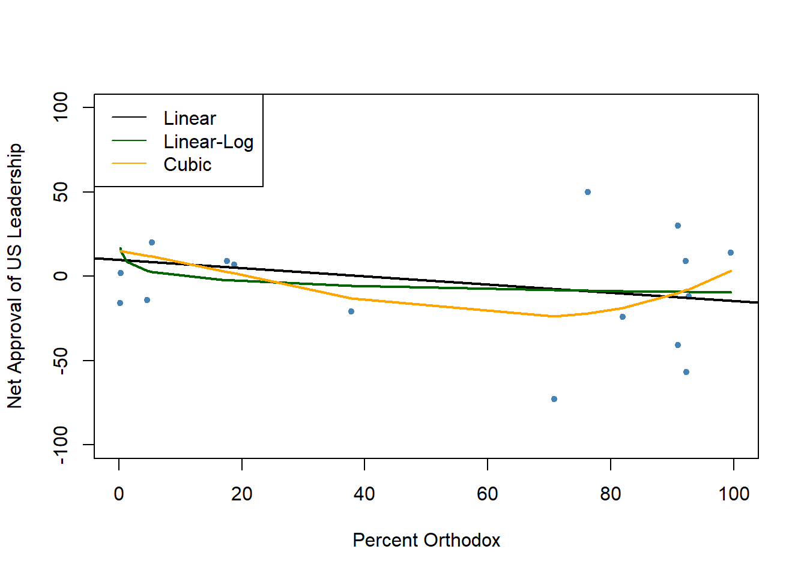

Code
library(tidyverse)
library(AER)
library(dplyr)
library(readxl)
knitr::opts_chunk$set(echo = TRUE)Matt Eckstein
August 18, 2023
\[ NetApprove_{i} = \beta_{0} + \beta _{1} × pctox \]
\[ NetApprove_{i} = \beta_{0} + \beta _{1} × pctox + \beta _{2} × netsentiment \] \[ NetApprove_{i} = \beta_{0} + \beta _{1} × pctox + \beta _{2} × bordruua \] \[ NetApprove_{i} = \beta_{0} + \beta _{1} × pctox + \beta _{2} × netsentiment + \beta _{3} × bordruua \] \[ NetApprove_{i} = \beta_{0} + \beta _{1} × pctox + \beta _{2} × strongru \] \[ NetApprove_{i} = \beta_{0} + \beta _{1} × pctox + \beta _{2} × closewest \]
#2a.
Rows: 17 Columns: 18
-- Column specification --------------------------------------------------------
Delimiter: ","
chr (4): Country, Estimated 2010
Catholic Population, Estimated 2010
Protes...
dbl (12): bordru, bordua, bordruua, pctox, approve, disapprove, dkref, 20212...
num (2): Estimated 2010
Orthodox Population, totalpop
i Use `spec()` to retrieve the full column specification for this data.
i Specify the column types or set `show_col_types = FALSE` to quiet this message. Country Estimated 2010\nCatholic Population
Length:17 Length:17
Class :character Class :character
Mode :character Mode :character
Estimated 2010\nProtestant Population Estimated 2010\nOrthodox Population
Length:17 Min. : 20000
Class :character 1st Qu.: 250000
Mode :character Median : 2680000
Mean : 11231176
3rd Qu.: 6730000
Max. :101450000
Estimated 2010 Population of Other Christians totalpop
Length:17 Min. : 1331535
Class :character 1st Qu.: 3678186
Mode :character Median : 7291436
Mean : 18790613
3rd Qu.: 11033783
Max. :143242599
bordru bordua bordruua pctox
Min. :0.0000 Min. :0.0000 Min. :0.0000 Min. : 0.20
1st Qu.:0.0000 1st Qu.:0.0000 1st Qu.:0.0000 1st Qu.: 5.42
Median :0.0000 Median :0.0000 Median :1.0000 Median :70.82
Mean :0.4118 Mean :0.3529 Mean :0.5882 Mean :51.39
3rd Qu.:1.0000 3rd Qu.:1.0000 3rd Qu.:1.0000 3rd Qu.:90.96
Max. :1.0000 Max. :1.0000 Max. :1.0000 Max. :99.56
approve disapprove dkref 202122chg
Min. :0.0400 Min. :0.0800 Min. :0.1200 Min. :-31
1st Qu.:0.2700 1st Qu.:0.2900 1st Qu.:0.1900 1st Qu.: -9
Median :0.3300 Median :0.3400 Median :0.2000 Median : -3
Mean :0.3653 Mean :0.3918 Mean :0.2424 Mean : 0
3rd Qu.:0.4100 3rd Qu.:0.4700 3rd Qu.:0.3000 3rd Qu.: 9
Max. :0.8000 Max. :0.7700 Max. :0.4200 Max. : 30
netapprove strongru closewest netsentiment
Min. :-73.000 Min. :22 Min. :48.00 Min. :-30.00
1st Qu.:-21.000 1st Qu.:40 1st Qu.:61.00 1st Qu.: -8.00
Median : 2.000 Median :52 Median :66.00 Median : 18.00
Mean : -2.647 Mean :53 Mean :64.76 Mean : 11.76
3rd Qu.: 14.000 3rd Qu.:61 3rd Qu.:69.00 3rd Qu.: 30.00
Max. : 72.000 Max. :85 Max. :82.00 Max. : 40.00 #2b. Customizing variable names
#Most of my variable names are good as they are; though, here, I create and name additional variables that will be helpful in my analysis
# Create a vector to store the oxbucket values
oxbucket <- character(length(data$pctox))
# Assign values to oxbucket based on pctox
oxbucket[data$pctox < 2] <- "<2%"
oxbucket[data$pctox >= 2 & data$pctox < 5] <- "2-5%"
oxbucket[data$pctox >= 5 & data$pctox < 10] <- "5-10%"
oxbucket[data$pctox >= 10 & data$pctox < 25] <- "10-25%"
oxbucket[data$pctox >= 25 & data$pctox < 50] <- "25-50%"
oxbucket[data$pctox >= 50 & data$pctox < 75] <- "50-75%"
oxbucket[data$pctox >= 75 & data$pctox < 100] <- "75-100%"
# Add the oxbucket variable to the data frame
data$oxbucket <- oxbucket
avgs <- data %>%
group_by(bordruua, oxbucket) %>%
summarize(mean(netapprove),
sd(netapprove),
n())`summarise()` has grouped output by 'bordruua'. You can override using the
`.groups` argument.border <- avgs %>% dplyr::filter(bordruua == 1)
noborder <- avgs %>% dplyr::filter(bordruua == 0)
colnames(border) <- c("Border_war", "Percent_orthodox", "mean_net_approval", "SD_net_approval", "number")
colnames(noborder) <- c("Border_war", "Percent_orthodox", "mean_net_approval", "SD_net_approval", "number")#2c. Designating regressors and reporting means and SDs
allvars_mean allvars_sd
pctox 51.3911765 40.9699643
netsentiment 11.7647059 22.5652648
bordruua 0.5882353 0.5072997
strongru 53.0000000 18.2688259
closewest 64.7647059 8.0972944#2d. Basic linear equation
Call:
lm(formula = data$netapprove ~ data$pctox)
Coefficients:
(Intercept) data$pctox
9.8367 -0.2429
Call:
lm(formula = data$netapprove ~ data$pctox)
Residuals:
Min 1Q Median 3Q Max
-65.633 -22.724 0.684 21.560 62.484
Coefficients:
Estimate Std. Error t value Pr(>|t|)
(Intercept) 9.8367 14.3169 0.687 0.503
data$pctox -0.2429 0.2204 -1.102 0.288
Residual standard error: 36.11 on 15 degrees of freedom
Multiple R-squared: 0.07494, Adjusted R-squared: 0.01327
F-statistic: 1.215 on 1 and 15 DF, p-value: 0.2877#2e. (Prompt 2e is identical to prompt 2d; see answer 2d)
#2f. Linear-log model
Call:
lm(formula = netapprove ~ log(pctox), data = data)
Coefficients:
(Intercept) log(pctox)
9.870 -4.233
Call:
lm(formula = netapprove ~ log(pctox), data = data)
Residuals:
Min 1Q Median 3Q Max
-64.839 -17.429 -2.699 18.278 63.305
Coefficients:
Estimate Std. Error t value Pr(>|t|)
(Intercept) 9.870 15.581 0.633 0.536
log(pctox) -4.233 4.341 -0.975 0.345
Residual standard error: 36.41 on 15 degrees of freedom
Multiple R-squared: 0.05961, Adjusted R-squared: -0.003086
F-statistic: 0.9508 on 1 and 15 DF, p-value: 0.345#2g. Cubic model
Call:
lm(formula = netapprove ~ I(pctox) + I(pctox^2) + I(pctox^3),
data = data)
Coefficients:
(Intercept) I(pctox) I(pctox^2) I(pctox^3)
15.0842278 -0.5664232 -0.0102011 0.0001475
Call:
lm(formula = netapprove ~ I(pctox) + I(pctox^2) + I(pctox^3),
data = data)
Residuals:
Min 1Q Median 3Q Max
-49.206 -26.290 -4.445 10.840 71.997
Coefficients:
Estimate Std. Error t value Pr(>|t|)
(Intercept) 15.0842278 19.7419850 0.764 0.458
I(pctox) -0.5664232 2.6229253 -0.216 0.832
I(pctox^2) -0.0102011 0.0659589 -0.155 0.879
I(pctox^3) 0.0001475 0.0004444 0.332 0.745
Residual standard error: 37.58 on 13 degrees of freedom
Multiple R-squared: 0.132, Adjusted R-squared: -0.06826
F-statistic: 0.6592 on 3 and 13 DF, p-value: 0.5916#2h. Plot the observations and add the linear, log-linear, and cubic models
plot <- plot(data$pctox, data$netapprove,
pch = 20,
col = "steelblue",
xlab = "Percent Orthodox",
ylab = "Net Approval of US Leadership",
xlim = c(0, 100),
ylim = c(-100, 100))
abline(model, lwd = 2)
order_id <- order(data$pctox)
lines(data$pctox[order_id],
fitted(Linearlog_model)[order_id],
col = "darkgreen",
lwd = 2)
lines(x = data$pctox[order_id],
y = fitted(cubic_model)[order_id],
col = "orange",
lwd = 2)
legend("topleft",
legend = c("Linear", "Linear-Log", "Cubic"),
lty = 1,
col = c("Black", "darkgreen", "orange"))
#3:
Visually speaking, none of the three representations (linear, linear-log, or cubic) is drastically different from the other two. The linear and linear-log models are extremely similar except for a slight upward hook at the left side of the graph in the linear-log model, and this makes the model neither noticeably better nor noticeably worse than the linear model.
The cubic model arguably follows the points slightly better than the other two models, but this is thanks to a dip in the model line at around 70% Orthodox that appears to be driven in large part by one point (Russia’s) with the lowest net approval of US leadership of any country in the dataset. Given the apparent ability of the curve to be noticeably influenced by this single point, it is likely that this model is overfitted. As such, there is no apparent advantage to choosing a non-linear model for this analysis.
#4a.
model <- lm(data$netapprove ~ data$pctox)
model2 <- lm(data$netapprove ~ data$pctox + data$netsentiment)
model3 <- lm(data$netapprove ~ data$pctox + data$bordruua)
model4 <- lm(data$netapprove ~ data$pctox + data$bordruua + data$netsentiment)
model5 <- lm(data$netapprove ~ data$pctox + data$strongru)
model6 <- lm(data$netapprove ~ data$pctox + data$closewest)
print(model)
Call:
lm(formula = data$netapprove ~ data$pctox)
Coefficients:
(Intercept) data$pctox
9.8367 -0.2429
Call:
lm(formula = data$netapprove ~ data$pctox + data$netsentiment)
Coefficients:
(Intercept) data$pctox data$netsentiment
-27.9698 0.1812 1.3610
Call:
lm(formula = data$netapprove ~ data$pctox + data$bordruua)
Coefficients:
(Intercept) data$pctox data$bordruua
-5.9958 -0.2082 23.8848
Call:
lm(formula = data$netapprove ~ data$pctox + data$bordruua + data$netsentiment)
Coefficients:
(Intercept) data$pctox data$bordruua data$netsentiment
-27.4665 0.1861 -1.7612 1.3849
Call:
lm(formula = data$netapprove ~ data$pctox + data$strongru)
Coefficients:
(Intercept) data$pctox data$strongru
72.0073 0.1514 -1.5553
Call:
lm(formula = data$netapprove ~ data$pctox + data$closewest)
Coefficients:
(Intercept) data$pctox data$closewest
-125.7743 -0.1266 2.0016
Call:
lm(formula = data$netapprove ~ data$pctox)
Residuals:
Min 1Q Median 3Q Max
-65.633 -22.724 0.684 21.560 62.484
Coefficients:
Estimate Std. Error t value Pr(>|t|)
(Intercept) 9.8367 14.3169 0.687 0.503
data$pctox -0.2429 0.2204 -1.102 0.288
Residual standard error: 36.11 on 15 degrees of freedom
Multiple R-squared: 0.07494, Adjusted R-squared: 0.01327
F-statistic: 1.215 on 1 and 15 DF, p-value: 0.2877
Call:
lm(formula = data$netapprove ~ data$pctox + data$netsentiment)
Residuals:
Min 1Q Median 3Q Max
-20.565 -17.029 -7.454 5.419 64.628
Coefficients:
Estimate Std. Error t value Pr(>|t|)
(Intercept) -27.9698 14.0341 -1.993 0.06613 .
data$pctox 0.1812 0.1907 0.950 0.35831
data$netsentiment 1.3610 0.3463 3.930 0.00151 **
---
Signif. codes: 0 '***' 0.001 '**' 0.01 '*' 0.05 '.' 0.1 ' ' 1
Residual standard error: 25.78 on 14 degrees of freedom
Multiple R-squared: 0.5602, Adjusted R-squared: 0.4973
F-statistic: 8.915 on 2 and 14 DF, p-value: 0.003184
Call:
lm(formula = data$netapprove ~ data$pctox + data$bordruua)
Residuals:
Min 1Q Median 3Q Max
-76.142 -10.584 -5.222 10.310 54.936
Coefficients:
Estimate Std. Error t value Pr(>|t|)
(Intercept) -5.9958 18.0802 -0.332 0.745
data$pctox -0.2082 0.2157 -0.966 0.351
data$bordruua 23.8848 17.4168 1.371 0.192
Residual standard error: 35.1 on 14 degrees of freedom
Multiple R-squared: 0.1845, Adjusted R-squared: 0.06798
F-statistic: 1.584 on 2 and 14 DF, p-value: 0.2399
Call:
lm(formula = data$netapprove ~ data$pctox + data$bordruua + data$netsentiment)
Residuals:
Min 1Q Median 3Q Max
-20.476 -15.797 -7.179 5.867 64.086
Coefficients:
Estimate Std. Error t value Pr(>|t|)
(Intercept) -27.4665 15.2018 -1.807 0.09398 .
data$pctox 0.1861 0.2024 0.919 0.37463
data$bordruua -1.7612 15.3332 -0.115 0.91031
data$netsentiment 1.3849 0.4152 3.336 0.00536 **
---
Signif. codes: 0 '***' 0.001 '**' 0.01 '*' 0.05 '.' 0.1 ' ' 1
Residual standard error: 26.74 on 13 degrees of freedom
Multiple R-squared: 0.5606, Adjusted R-squared: 0.4592
F-statistic: 5.529 on 3 and 13 DF, p-value: 0.0114
Call:
lm(formula = data$netapprove ~ data$pctox + data$strongru)
Residuals:
Min 1Q Median 3Q Max
-23.523 -17.892 -3.459 3.915 73.318
Coefficients:
Estimate Std. Error t value Pr(>|t|)
(Intercept) 72.0073 21.5210 3.346 0.00480 **
data$pctox 0.1514 0.2062 0.734 0.47502
data$strongru -1.5553 0.4624 -3.363 0.00464 **
---
Signif. codes: 0 '***' 0.001 '**' 0.01 '*' 0.05 '.' 0.1 ' ' 1
Residual standard error: 27.8 on 14 degrees of freedom
Multiple R-squared: 0.4884, Adjusted R-squared: 0.4153
F-statistic: 6.681 on 2 and 14 DF, p-value: 0.009179
Call:
lm(formula = data$netapprove ~ data$pctox + data$closewest)
Residuals:
Min 1Q Median 3Q Max
-48.347 -22.549 -6.299 16.072 61.334
Coefficients:
Estimate Std. Error t value Pr(>|t|)
(Intercept) -125.7743 74.5317 -1.688 0.1136
data$pctox -0.1266 0.2139 -0.592 0.5633
data$closewest 2.0016 1.0825 1.849 0.0857 .
---
Signif. codes: 0 '***' 0.001 '**' 0.01 '*' 0.05 '.' 0.1 ' ' 1
Residual standard error: 33.51 on 14 degrees of freedom
Multiple R-squared: 0.2565, Adjusted R-squared: 0.1503
F-statistic: 2.415 on 2 and 14 DF, p-value: 0.1256#4b.
#4c.
Please cite as: Hlavac, Marek (2022). stargazer: Well-Formatted Regression and Summary Statistics Tables. R package version 5.2.3. https://CRAN.R-project.org/package=stargazer stargazer(model, model2, model3,
model4, model5, model6,
title = "Regressions of Orthodox Christian Religious ID and Net Approval of US Leadership",
type = "html",
digits = 3,
header = FALSE,
se = rob_se,
object.names = TRUE,
model.numbers = FALSE,
column.labels = c("(I)", "(II)", "(III)", "(IV)", "(V)", "(VI)"))| Dependent variable: | ||||||
| netapprove | ||||||
| (I) | (II) | (III) | (IV) | (V) | (VI) | |
| model | model2 | model3 | model4 | model5 | model6 | |
| pctox | -0.243 | 0.181 | -0.208 | 0.186 | 0.151 | -0.127 |
| (0.207) | (0.131) | (0.189) | (0.153) | (0.116) | (0.183) | |
| netsentiment | 1.361*** | 1.385*** | ||||
| (0.318) | (0.287) | |||||
| bordruua | 23.885 | -1.761 | ||||
| (15.950) | (11.926) | |||||
| strongru | -1.555*** | |||||
| (0.514) | ||||||
| closewest | 2.002** | |||||
| (0.780) | ||||||
| Constant | 9.837 | -27.970*** | -5.996 | -27.466** | 72.007*** | -125.774** |
| (12.324) | (10.611) | (11.042) | (11.524) | (25.230) | (52.850) | |
| Observations | 17 | 17 | 17 | 17 | 17 | 17 |
| R2 | 0.075 | 0.560 | 0.184 | 0.561 | 0.488 | 0.257 |
| Adjusted R2 | 0.013 | 0.497 | 0.068 | 0.459 | 0.415 | 0.150 |
| Residual Std. Error | 36.114 (df = 15) | 25.776 (df = 14) | 35.098 (df = 14) | 26.735 (df = 13) | 27.801 (df = 14) | 33.512 (df = 14) |
| F Statistic | 1.215 (df = 1; 15) | 8.915*** (df = 2; 14) | 1.584 (df = 2; 14) | 5.529** (df = 3; 13) | 6.681*** (df = 2; 14) | 2.415 (df = 2; 14) |
| Note: | p<0.1; p<0.05; p<0.01 | |||||
#4d. Linear hypothesis tests (F-tests) for each model:
Linear hypothesis test
Hypothesis:
data$pctox = 0
Model 1: restricted model
Model 2: data$netapprove ~ data$pctox
Note: Coefficient covariance matrix supplied.
Res.Df Df F Pr(>F)
1 16
2 15 1 1.382 0.2581Linear hypothesis test
Hypothesis:
data$netsentiment = 0
data$pctox = 0
Model 1: restricted model
Model 2: data$netapprove ~ data$pctox + data$netsentiment
Note: Coefficient covariance matrix supplied.
Res.Df Df F Pr(>F)
1 16
2 14 2 10.277 0.001793 **
---
Signif. codes: 0 '***' 0.001 '**' 0.01 '*' 0.05 '.' 0.1 ' ' 1Linear hypothesis test
Hypothesis:
data$bordruua = 0
data$pctox = 0
Model 1: restricted model
Model 2: data$netapprove ~ data$pctox + data$bordruua
Note: Coefficient covariance matrix supplied.
Res.Df Df F Pr(>F)
1 16
2 14 2 1.525 0.2517Linear hypothesis test
Hypothesis:
data$netsentiment = 0
data$pctox = 0
data$bordruua = 0
Model 1: restricted model
Model 2: data$netapprove ~ data$pctox + data$bordruua + data$netsentiment
Note: Coefficient covariance matrix supplied.
Res.Df Df F Pr(>F)
1 16
2 13 3 7.8231 0.003093 **
---
Signif. codes: 0 '***' 0.001 '**' 0.01 '*' 0.05 '.' 0.1 ' ' 1Linear hypothesis test
Hypothesis:
data$pctox = 0
data$strongru = 0
Model 1: restricted model
Model 2: data$netapprove ~ data$pctox + data$strongru
Note: Coefficient covariance matrix supplied.
Res.Df Df F Pr(>F)
1 16
2 14 2 5.6243 0.01612 *
---
Signif. codes: 0 '***' 0.001 '**' 0.01 '*' 0.05 '.' 0.1 ' ' 1Linear hypothesis test
Hypothesis:
data$pctox = 0
data$closewest = 0
Model 1: restricted model
Model 2: data$netapprove ~ data$pctox + data$closewest
Note: Coefficient covariance matrix supplied.
Res.Df Df F Pr(>F)
1 16
2 14 2 3.505 0.05833 .
---
Signif. codes: 0 '***' 0.001 '**' 0.01 '*' 0.05 '.' 0.1 ' ' 1#5.
I have examined the influence of the percentage of Eastern European countries’ populations that identify as Orthodox Christian, as measured by Pew Research, on their populations’ net approval of US leadership in the world (the difference between the share of people who expressed approval and the share who expressed disapproval), as measured by Gallup.
I have considered a series of six models for examining contributing factors in this relationship:
-model (I), which uses the percentage of countries’ populations identifying as Orthodox (pctox) as the sole independent variable to explain variation in net approval of US leadership (netapprove) -model (II), which uses both pctox and netsentiment, a variable that measures the difference in each surveyed country between the percentages of respondents who agree with the statements “It is in our country’s interest to work closely with the U.S. and other Western powers” and “A strong Russia is necessary to balance the influence of the West.” -model (III), which uses both pctox and bordruua, a dummy variable that accounts for geographic proximity to the Russia-Ukraine conflict and takes the value 1 in countries that border Russia and/or Ukraine and 0 in countries that do not border either -model (IV), which uses pctox, netsentiment, and bordruua together -model (V), which uses pctox and strongru, a variable that codes for levels of agreement with the statement “A strong Russia is necessary to balance the influence of the West” -model (VI), which uses pctox and closewest, a variable that codes for levels of agreement with the statement “It is in our country’s interest to work closely with the U.S. and other Western powers”
I began this analysis hypothesizing that the share of countries’ populations that identify as Orthodox would negatively predict public approval of US leadership, due to Russia’s history as a major influence on public opinion in the Orthodox world and its use of Orthodox religious themes in anti-Western political propaganda attempting to justify actions such as its invasion of Ukraine. When I used pctox as my sole independent variable in model (I), it was negatively signed, but not statistically significant. In the other models where it was included alongside other variables, its sign was sometimes positive and sometimes negative, but it never attained statistical significance, meaning that I did not find evidence in favor of my initial hypothesis.
I did find, though, that inclusion of the netsentiment variable measuring the difference between respondents’ endorsement of the pro-Western statement and their endorsement of the pro-Russian statement resulted in its significance as a predictor of net approval of US leadership. Similarly, including the pro-Western statement or the pro-Russian statement alone without making any reference to the other also resulted in statistical significance as a predictor of net approval of US leadership. In model II, the coefficient on netsentiment of 1.361 was statistically significant at the 1% level, meaning that an increase in netsentiment of one percentage point, holding all else constant, led to an increase in US leadership approval of 1.361 percentage points and that there was a less than one percent chance of the study finding a value at least as extreme as the one observed in the absence of a true relationship. In model IV, the coefficient on netsentiment was a very similar 1.385, also significant at the 1% level. Model V found that the coefficient on strongru, measuring agreement with the pro-Russian statement, was -1.555, and that this finding was also significant at the 1% level. This means that, if all other variables’ values are held constant, increasing a surveyed country’s agreement that a strong Russia is necessary to balance the West by one percentage point led to a 1.555 percentage point decrease in net approval of US leadership. Conversely, in Model VI, the coefficient on closewest was 2.002, meaning that, holding all else constant, increasing a country’s agreement with the pro-Western statement by one percentage point led to a 2.002 percentage point increase in net approval of US leadership. However, this was a somewhat weaker finding, being statistically significant at the 5% level, meaning that there was a less than 5% but greater than 1% chance of finding a value at least as extreme as the one observed in the absence of a true relationship.
In no model was the bordruua variable, measuring whether or not a country borders Russia and/or Ukraine, statistically significant, meaning that this analysis did not find evidence of geographic proximity to the Russian invasion of Ukraine as a meaningful predictor of attitudes towards US leadership.
Considering these factors, although no model found statistical significance of the predictor I set out to investigate, the model that best explains the relationship between Orthodox Christian religious affiliation and views of US leadership is model (II). It finds a potential alternative explanation, netsentiment, highly statistically significant. Furthermore, an F-test finds that the model has a p-value of 0.001793, meaning that, if the model’s variables were collectively not truly related to net approval of US leadership, there would be only a 1 in 558 chance of data at least as extreme as what was observed occurring by chance. The significance of netsentiment sheds light on where some of the impact I expected to come from pctox is actually coming from and thus provides insights into why pctox lacks significance.
This analysis has a few limitations. Notably, it does not include a variable measuring the percentage of ethnic Russians in the included countries, because no dataset was available that measured this variable across countries in a consistent manner. This poses a risk of omitted variable bias, meaning that the absence of this factor from the analysis could cause have distorted the estimates of some coefficients. Of the included countries, those with large minorities of ethnic Russians and where the majority ethnic group has few adherents of Orthodox Christianity - that is, Estonia and Latvia - are most likely to be affected, since some of the effects the model is attributing to Orthodox religious affiliation may in fact be caused at least in part by Russian ethnic identity. Also, the small sample size of 17 countries can result in large confidence intervals for some estimates, meaning that there is a risk of some estimated values being further from their true values than they would have been with a larger sample. The scope of this risk, though, is limited, since the small number of countries in Eastern Europe will automatically limit the scope of the data - the sample of 17 is a relatively large share of the entire universe of Eastern European countries. Additionally, this analysis would have benefited from, and future analysis would benefit from, availability of data at a more granular level, to analyze the relationship between Orthodox identity and approval of US leadership in the world broken down by sub-national dimensions such as administrative division (province, oblast, etc.), age, gender, and ethnicity.
While the missing data on Russian ethnicity threatens some aspects of internal validity, the scope of this threat is limited. While the lack of data on Russian ethnicity may cause some distortion of results when it comes to Estonia and Latvia, the risk of distortion of results via conflation of the impacts of Russian ethnicity with those of Orthodox religious affiliation is relatively low elsewhere. The netsentiment variable, by measuring the difference between national publics’ feelings towards the West and their feelings towards Russia, is a suitable regressor for accounting for non-religious political factors that impact Eastern Europeans’ views of US leadership in the world. The credibility of the Pew Research Center and Gallup as data sources likely means the risk of an errors-in-variables bias caused by mismeasuring values of variables is quite low. Furthermore, the risk of simultaneous causality bias, the phenomenon wherein a dependent and an independent variable are causes of each other, is also low, since it seems much less likely (although theoretically possible) for a person to change their religious affiliation as a result of their views of US leadership than it does for a person’s pre-existing religious affiliation to affect their views of US leadership.
External validity of this analysis is likely strong, because the countries included in the study are roughly representative of Eastern European countries as a whole, and each variable has a consistent time and source for every included country.
---
title: "Class Project Assignment 2"
author: "Matt Eckstein"
desription: "Religious Identification as Orthodox Christian vs. Approval of US Leadership in the World"
date: "08/18/2023"
format:
html:
toc: true
code-fold: true
code-copy: true
code-tools: true
categories:
- Matt Eckstein
---
```{r}
#| label: setup
#| warning: false
library(tidyverse)
library(AER)
library(dplyr)
library(readxl)
knitr::opts_chunk$set(echo = TRUE)
```
# 1. Multiple regression models
$$
NetApprove_{i} = \beta_{0} + \beta _{1} × pctox
$$
$$
NetApprove_{i} = \beta_{0} + \beta _{1} × pctox + \beta _{2} × netsentiment
$$
$$
NetApprove_{i} = \beta_{0} + \beta _{1} × pctox + \beta _{2} × bordruua
$$
$$
NetApprove_{i} = \beta_{0} + \beta _{1} × pctox + \beta _{2} × netsentiment + \beta _{3} × bordruua
$$
$$
NetApprove_{i} = \beta_{0} + \beta _{1} × pctox + \beta _{2} × strongru
$$
$$
NetApprove_{i} = \beta_{0} + \beta _{1} × pctox + \beta _{2} × closewest
$$
#2a.
```{r}
data <- read_csv("Eckstein_data/Orthodoxy_and_US_leadership_cleaned.csv")
data$pctox <- data$pctox * 100
summary(data)
```
#2b. Customizing variable names
```{r}
#Most of my variable names are good as they are; though, here, I create and name additional variables that will be helpful in my analysis
# Create a vector to store the oxbucket values
oxbucket <- character(length(data$pctox))
# Assign values to oxbucket based on pctox
oxbucket[data$pctox < 2] <- "<2%"
oxbucket[data$pctox >= 2 & data$pctox < 5] <- "2-5%"
oxbucket[data$pctox >= 5 & data$pctox < 10] <- "5-10%"
oxbucket[data$pctox >= 10 & data$pctox < 25] <- "10-25%"
oxbucket[data$pctox >= 25 & data$pctox < 50] <- "25-50%"
oxbucket[data$pctox >= 50 & data$pctox < 75] <- "50-75%"
oxbucket[data$pctox >= 75 & data$pctox < 100] <- "75-100%"
# Add the oxbucket variable to the data frame
data$oxbucket <- oxbucket
avgs <- data %>%
group_by(bordruua, oxbucket) %>%
summarize(mean(netapprove),
sd(netapprove),
n())
border <- avgs %>% dplyr::filter(bordruua == 1)
noborder <- avgs %>% dplyr::filter(bordruua == 0)
colnames(border) <- c("Border_war", "Percent_orthodox", "mean_net_approval", "SD_net_approval", "number")
colnames(noborder) <- c("Border_war", "Percent_orthodox", "mean_net_approval", "SD_net_approval", "number")
```
#2c. Designating regressors and reporting means and SDs
```{r}
vars <- c("pctox", "netsentiment", "bordruua", "strongru", "closewest")
cbind(allvars_mean = sapply(data[, vars], mean),
allvars_sd = sapply(data[, vars], sd))
```
#2d. Basic linear equation
```{r}
model <- lm(data$netapprove ~ data$pctox)
model
summary(model)
```
#2e. (Prompt 2e is identical to prompt 2d; see answer 2d)
#2f. Linear-log model
```{r}
Linearlog_model <- lm(netapprove ~ log(pctox), data = data)
Linearlog_model
summary(Linearlog_model)
```
#2g. Cubic model
```{r}
cubic_model <- lm(netapprove ~ I(pctox) + I(pctox^2) + I(pctox^3), data =
data)
cubic_model
summary(cubic_model)
```
#2h. Plot the observations and add the linear, log-linear, and cubic models
```{r}
plot <- plot(data$pctox, data$netapprove,
pch = 20,
col = "steelblue",
xlab = "Percent Orthodox",
ylab = "Net Approval of US Leadership",
xlim = c(0, 100),
ylim = c(-100, 100))
abline(model, lwd = 2)
order_id <- order(data$pctox)
lines(data$pctox[order_id],
fitted(Linearlog_model)[order_id],
col = "darkgreen",
lwd = 2)
lines(x = data$pctox[order_id],
y = fitted(cubic_model)[order_id],
col = "orange",
lwd = 2)
legend("topleft",
legend = c("Linear", "Linear-Log", "Cubic"),
lty = 1,
col = c("Black", "darkgreen", "orange"))
```
#3:
Visually speaking, none of the three representations (linear, linear-log, or cubic) is drastically different from the other two. The linear and linear-log models are extremely similar except for a slight upward hook at the left side of the graph in the linear-log model, and this makes the model neither noticeably better nor noticeably worse than the linear model.
The cubic model arguably follows the points slightly better than the other two models, but this is thanks to a dip in the model line at around 70% Orthodox that appears to be driven in large part by one point (Russia's) with the lowest net approval of US leadership of any country in the dataset. Given the apparent ability of the curve to be noticeably influenced by this single point, it is likely that this model is overfitted. As such, there is no apparent advantage to choosing a non-linear model for this analysis.
#4a.
```{r}
model <- lm(data$netapprove ~ data$pctox)
model2 <- lm(data$netapprove ~ data$pctox + data$netsentiment)
model3 <- lm(data$netapprove ~ data$pctox + data$bordruua)
model4 <- lm(data$netapprove ~ data$pctox + data$bordruua + data$netsentiment)
model5 <- lm(data$netapprove ~ data$pctox + data$strongru)
model6 <- lm(data$netapprove ~ data$pctox + data$closewest)
print(model)
print(model2)
print(model3)
print(model4)
print(model5)
print(model6)
summary(model)
summary(model2)
summary(model3)
summary(model4)
summary(model5)
summary(model6)
```
#4b.
```{r}
rob_se <- list(sqrt(diag(vcovHC(model, type = "HC1"))),
sqrt(diag(vcovHC(model2, type = "HC1"))),
sqrt(diag(vcovHC(model3, type = "HC1"))),
sqrt(diag(vcovHC(model4, type = "HC1"))),
sqrt(diag(vcovHC(model5, type = "HC1"))),
sqrt(diag(vcovHC(model6, type = "HC1"))))
```
#4c.
```{r my latextable, results = "asis"}
library(stargazer)
stargazer(model, model2, model3,
model4, model5, model6,
title = "Regressions of Orthodox Christian Religious ID and Net Approval of US Leadership",
type = "html",
digits = 3,
header = FALSE,
se = rob_se,
object.names = TRUE,
model.numbers = FALSE,
column.labels = c("(I)", "(II)", "(III)", "(IV)", "(V)", "(VI)"))
```
#4d. Linear hypothesis tests (F-tests) for each model:
```{r}
#Note the white.adjust robust fix for handling heteroskedasticity
linearHypothesis(model, c("data$pctox=0"), white.adjust = "hc1")
linearHypothesis(model2, c("data$netsentiment=0", "data$pctox=0"), white.adjust = "hc1")
linearHypothesis(model3, c("data$bordruua=0", "data$pctox=0"), white.adjust = "hc1")
linearHypothesis(model4, c("data$netsentiment=0", "data$pctox=0", "data$bordruua=0"), white.adjust = "hc1")
linearHypothesis(model5, c("data$pctox=0", "data$strongru=0"), white.adjust = "hc1")
linearHypothesis(model6, c("data$pctox=0", "data$closewest=0"), white.adjust = "hc1")
```
#5.
I have examined the influence of the percentage of Eastern European countries' populations that identify as Orthodox Christian, as measured by Pew Research, on their populations' net approval of US leadership in the world (the difference between the share of people who expressed approval and the share who expressed disapproval), as measured by Gallup.
I have considered a series of six models for examining contributing factors in this relationship:
-model (I), which uses the percentage of countries' populations identifying as Orthodox (pctox) as the sole independent variable to explain variation in net approval of US leadership (netapprove)
-model (II), which uses both pctox and netsentiment, a variable that measures the difference in each surveyed country between the percentages of respondents who agree with the statements "It is in our country's interest to work closely with the U.S. and other Western powers" and "A strong Russia is necessary to balance the influence of the West."
-model (III), which uses both pctox and bordruua, a dummy variable that accounts for geographic proximity to the Russia-Ukraine conflict and takes the value 1 in countries that border Russia and/or Ukraine and 0 in countries that do not border either
-model (IV), which uses pctox, netsentiment, and bordruua together
-model (V), which uses pctox and strongru, a variable that codes for levels of agreement with the statement "A strong Russia is necessary to balance the influence of the West"
-model (VI), which uses pctox and closewest, a variable that codes for levels of agreement with the statement "It is in our country's interest to work closely with the U.S. and other Western powers"
I began this analysis hypothesizing that the share of countries' populations that identify as Orthodox would negatively predict public approval of US leadership, due to Russia's history as a major influence on public opinion in the Orthodox world and its use of Orthodox religious themes in anti-Western political propaganda attempting to justify actions such as its invasion of Ukraine. When I used pctox as my sole independent variable in model (I), it was negatively signed, but not statistically significant. In the other models where it was included alongside other variables, its sign was sometimes positive and sometimes negative, but it never attained statistical significance, meaning that I did not find evidence in favor of my initial hypothesis.
I did find, though, that inclusion of the netsentiment variable measuring the difference between respondents' endorsement of the pro-Western statement and their endorsement of the pro-Russian statement resulted in its significance as a predictor of net approval of US leadership. Similarly, including the pro-Western statement or the pro-Russian statement alone without making any reference to the other also resulted in statistical significance as a predictor of net approval of US leadership. In model II, the coefficient on netsentiment of 1.361 was statistically significant at the 1% level, meaning that an increase in netsentiment of one percentage point, holding all else constant, led to an increase in US leadership approval of 1.361 percentage points and that there was a less than one percent chance of the study finding a value at least as extreme as the one observed in the absence of a true relationship. In model IV, the coefficient on netsentiment was a very similar 1.385, also significant at the 1% level. Model V found that the coefficient on strongru, measuring agreement with the pro-Russian statement, was -1.555, and that this finding was also significant at the 1% level. This means that, if all other variables' values are held constant, increasing a surveyed country's agreement that a strong Russia is necessary to balance the West by one percentage point led to a 1.555 percentage point decrease in net approval of US leadership. Conversely, in Model VI, the coefficient on closewest was 2.002, meaning that, holding all else constant, increasing a country's agreement with the pro-Western statement by one percentage point led to a 2.002 percentage point increase in net approval of US leadership. However, this was a somewhat weaker finding, being statistically significant at the 5% level, meaning that there was a less than 5% but greater than 1% chance of finding a value at least as extreme as the one observed in the absence of a true relationship.
In no model was the bordruua variable, measuring whether or not a country borders Russia and/or Ukraine, statistically significant, meaning that this analysis did not find evidence of geographic proximity to the Russian invasion of Ukraine as a meaningful predictor of attitudes towards US leadership.
Considering these factors, although no model found statistical significance of the predictor I set out to investigate, the model that best explains the relationship between Orthodox Christian religious affiliation and views of US leadership is model (II). It finds a potential alternative explanation, netsentiment, highly statistically significant. Furthermore, an F-test finds that the model has a p-value of 0.001793, meaning that, if the model's variables were collectively not truly related to net approval of US leadership, there would be only a 1 in 558 chance of data at least as extreme as what was observed occurring by chance. The significance of netsentiment sheds light on where some of the impact I expected to come from pctox is actually coming from and thus provides insights into why pctox lacks significance.
This analysis has a few limitations. Notably, it does not include a variable measuring the percentage of ethnic Russians in the included countries, because no dataset was available that measured this variable across countries in a consistent manner. This poses a risk of omitted variable bias, meaning that the absence of this factor from the analysis could cause have distorted the estimates of some coefficients. Of the included countries, those with large minorities of ethnic Russians and where the majority ethnic group has few adherents of Orthodox Christianity - that is, Estonia and Latvia - are most likely to be affected, since some of the effects the model is attributing to Orthodox religious affiliation may in fact be caused at least in part by Russian ethnic identity. Also, the small sample size of 17 countries can result in large confidence intervals for some estimates, meaning that there is a risk of some estimated values being further from their true values than they would have been with a larger sample. The scope of this risk, though, is limited, since the small number of countries in Eastern Europe will automatically limit the scope of the data - the sample of 17 is a relatively large share of the entire universe of Eastern European countries. Additionally, this analysis would have benefited from, and future analysis would benefit from, availability of data at a more granular level, to analyze the relationship between Orthodox identity and approval of US leadership in the world broken down by sub-national dimensions such as administrative division (province, oblast, etc.), age, gender, and ethnicity.
While the missing data on Russian ethnicity threatens some aspects of internal validity, the scope of this threat is limited. While the lack of data on Russian ethnicity may cause some distortion of results when it comes to Estonia and Latvia, the risk of distortion of results via conflation of the impacts of Russian ethnicity with those of Orthodox religious affiliation is relatively low elsewhere. The netsentiment variable, by measuring the difference between national publics' feelings towards the West and their feelings towards Russia, is a suitable regressor for accounting for non-religious political factors that impact Eastern Europeans' views of US leadership in the world. The credibility of the Pew Research Center and Gallup as data sources likely means the risk of an errors-in-variables bias caused by mismeasuring values of variables is quite low. Furthermore, the risk of simultaneous causality bias, the phenomenon wherein a dependent and an independent variable are causes of each other, is also low, since it seems much less likely (although theoretically possible) for a person to change their religious affiliation as a result of their views of US leadership than it does for a person's pre-existing religious affiliation to affect their views of US leadership.
External validity of this analysis is likely strong, because the countries included in the study are roughly representative of Eastern European countries as a whole, and each variable has a consistent time and source for every included country.